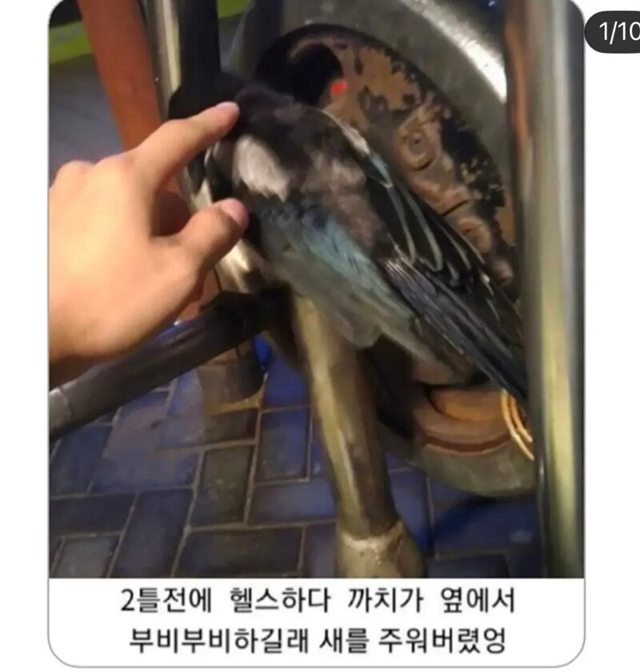
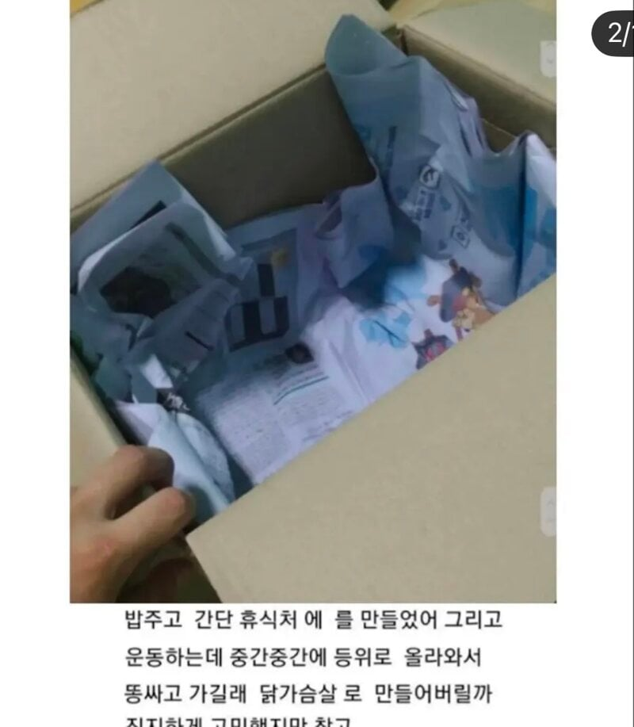
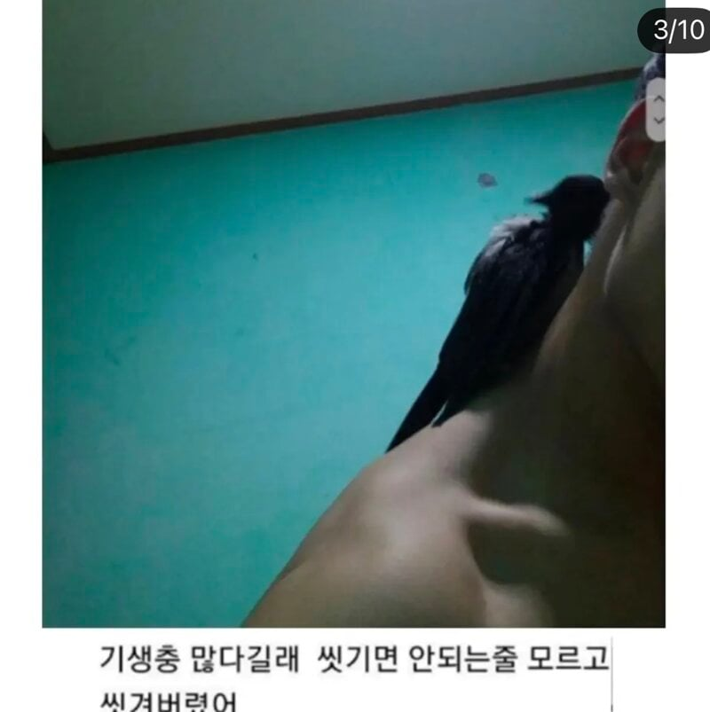
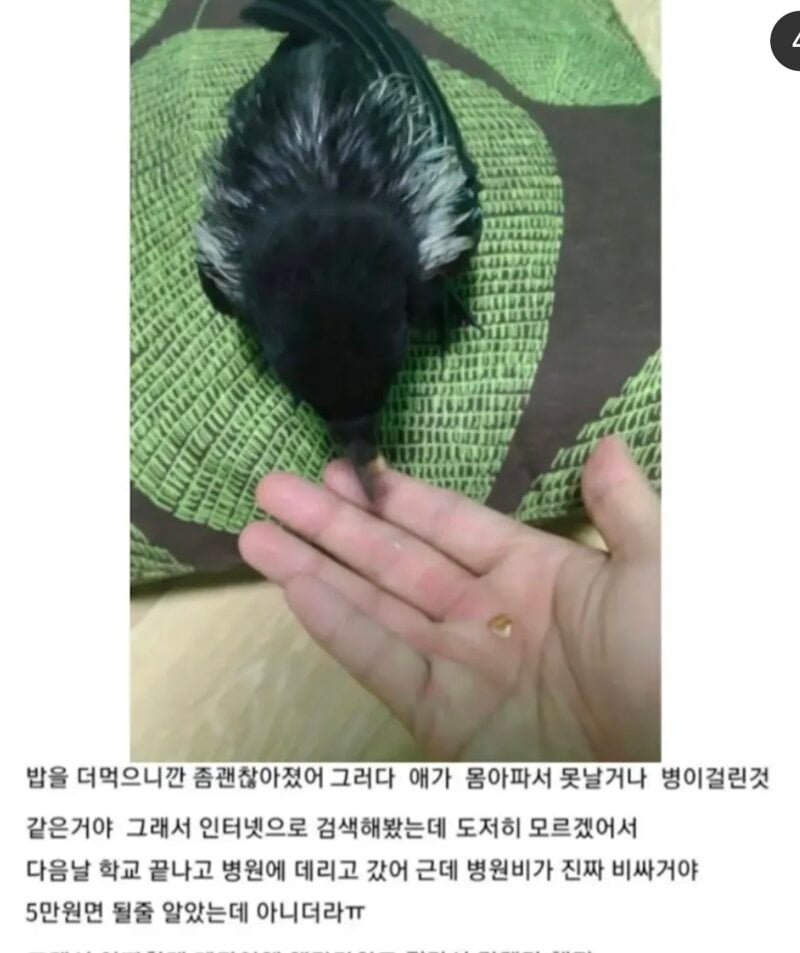
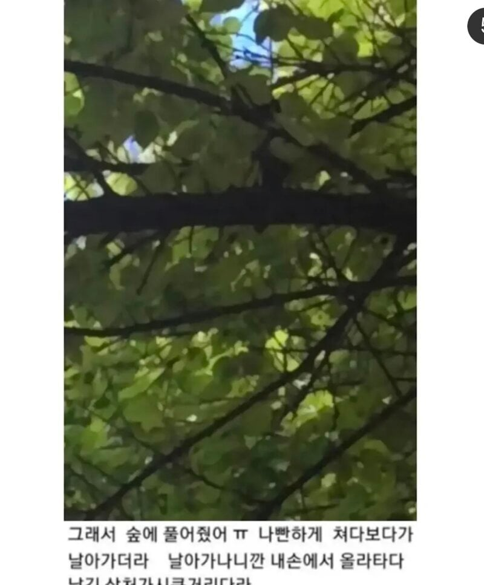
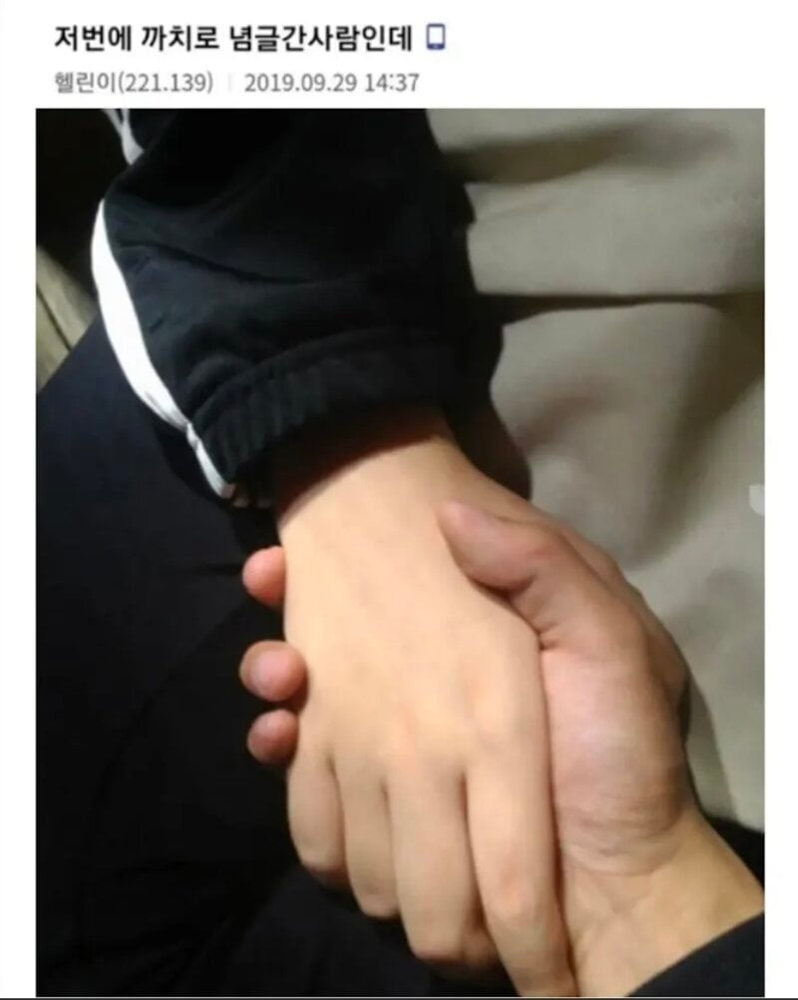
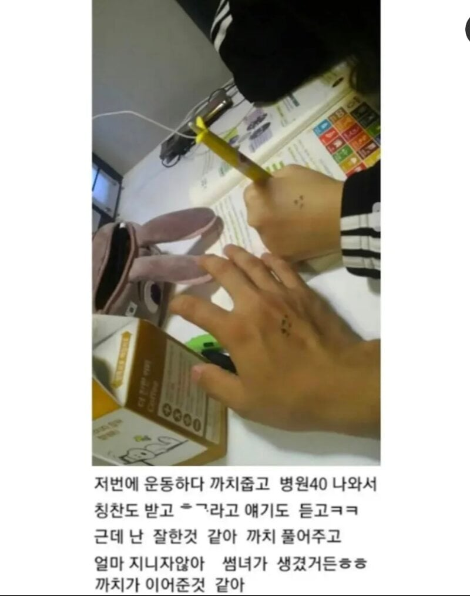
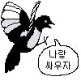
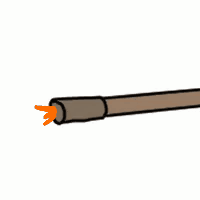

썸녀가 검은 옷에 흰 줄인거 보니 까치가 변신한거네







썸녀가 검은 옷에 흰 줄인거 보니 까치가 변신한거네


보쌈집 이용권주겠네
왜 씻기면 안됨 근데?
쟤네들 물웅덩이나 분수대같은데 들어가서 헤엄치기도 하잖슴
물에 들어가면 부엉이 됨
첨부엉 첨부엉 수영해서

문제될거 없음 따뜻한 물로 씻기고 물기 안남게 잘 말려주기만 하면 돼
아 이거 너무 높은 온도에서 씻긴거 같은데...점점 맛있는 냄새가 나...
대부분의 동물들은 땀샘에서 기름이 분비되는데... 이 기름이 피부와 털을 보호함
게다가 새들은 깃털이 빗물에 젖어버리면 무거워져서 못날기 때문에 깃털에 기름막이 중요함
그걸 비누로 씻어버리면....
까치양.. 참으로 고맙소...
사람으로 변한거면 오히려 가치가 떨어지는데;
이봐요 미친놈씨!
님아
옷부터 까치인거 눈치를ㅋㅋㅋㅋㅋㅋㅋㅋ
하루 2틀 4흘 나흘 5나흘
오늘부터 까치만 찾는다
게이야 각시가 비단 짜야 한다고 잠시 나가라고 하면 훔쳐 보면 안된다.
이거보고 동네 까치 전부 잡아서 다리 조사놓은다음 고쳐주기로했다
혹시 여친의 성이 박씨가 아닌지 물어봐라
총배설강..
아팠을때 진작에 변신했으면 병원비 쌌을텐데 ㅡㅡ;
요망한 까치같으니라구

오 바로 까치 다리 부러트려서 고쳐주러갑니다!